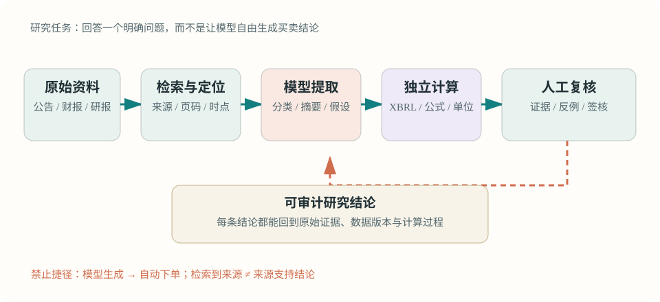
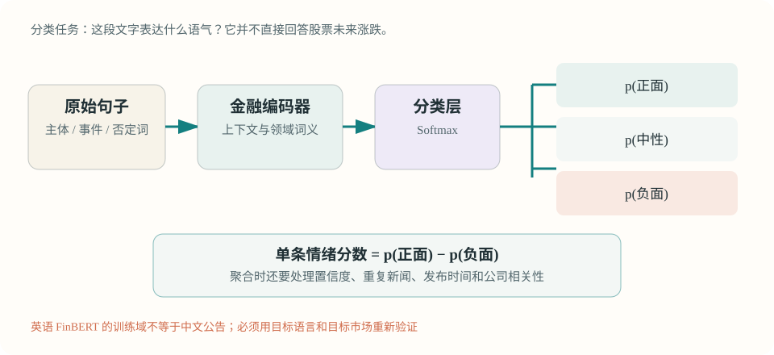
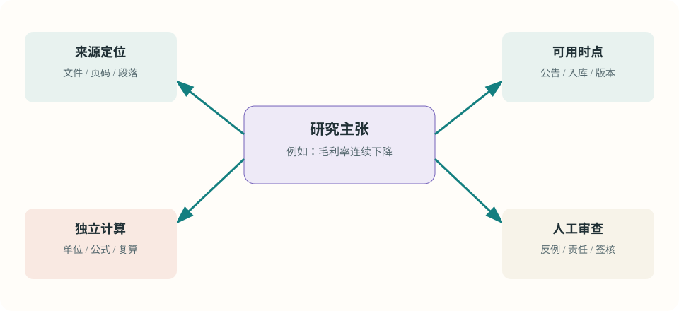

CHAPTER 26 · AI-ASSISTED INVESTMENT RESEARCH
AI驱动的投资分析：从文本到可审计证据
AI可以加快检索、分类和假设生成；投资研究仍需要可追溯的数据、确定性计算、样本外验证与明确的人类责任。
一份研报摘要很流畅，为什么仍然不能直接成为投资结论？
模型可以在几秒钟内把一份年报整理成“收入稳健、利润承压、现金流改善”的摘要。但这句话究竟来自哪一页？“利润承压”比较的是哪个报告期？现金流改善是否由营运资本释放造成？报告有没有更正？如果回答不了这些问题，语言流畅只说明模型生成了连贯文本，并没有证明分析正确。
AI在投资研究中的合理位置，是提高检索、分类、结构化提取和研究假设生成效率；财务口径、数值计算、信息时点、投资授权和最终责任仍须由可核验流程承担。把AI从“结论机器”改造成“证据工作台”，才是更稳健的研究架构。

先定义研究问题，再选择模型：投资AI工作流的六个环节
一个可管理的任务通常从窄问题开始，例如“最近两期报告中，经营现金流与净利润的差异来自哪些科目？”而不是“请告诉我这家公司值不值得买”。窄问题能定义数据范围、单位、比较期间和成功标准，也能判断模型是否真的完成任务。
- 资料接入：仅使用合法取得、可留存版本的公告、财报、交易所披露和授权数据。
- 检索定位：按公司、报告期、公告时间、章节和原始页码建立可追溯索引。
- 模型提取：把文本归类、抽取候选事实、总结差异或提出需要验证的假设。
- 结构化核对：检查单位、合并口径、期间、币种、正负号和原始XBRL/表格数据。
- 独立计算：用普通程序复算比率、现金流桥接、估值和敏感性，不让语言模型充当计算器。
- 研究签核：保存证据、反例、模型版本、审核人和结论的适用边界。
美国SEC的EDGAR API提供公司申报历史和提取的XBRL事实数据；API数据在申报发布后更新，但大批量下载也有独立的bulk archive。该接口针对美国申报体系，不是中国A股公告接口。使用时还要遵守SEC的公平访问要求：请求应标明User-Agent并控制频率，不能将“无需API Key”误解为可以无限抓取。见SEC EDGAR API说明与Developer Resources。
金融情绪分析：同一个词在财务语境里可能有不同含义
情绪分析不是统计“正面词”和“负面词”的简单计数。Loughran与McDonald对10-K文本的研究指出，通用词典会把大量金融语境中的普通词误判为负面词；他们据此构建了更适合财务文本的词典。金融文本模型FinBERT则利用金融语料预训练/微调来处理专业语言。两者都是文本分类工具，不是股价预测模型。
FinBERT的不同实现、训练语料和标签任务并不完全相同。Araci在2019年的FinBERT工作研究金融情绪分类，并在其论文所用数据集上报告相对基线的改进；这不能直接外推为A股中文公告上的预测准确率。英文金融模型也不能未经评估就套用到中文研报、互动平台或公告。

财务问答必须拆开“读懂文本”和“算对数字”
财务分析中的数值问题经常跨越表格、脚注和不同报告期间。例如“应收账款增长是否快于收入”需要两个项目的期间、币种、合并口径和单位一致。语言模型可能正确解释业务原因，却把千元与百万元混用；也可能把母公司口径与合并口径拼在一起。
FinQA研究将财务报告中的问题与数值推理步骤组织成数据集，说明金融问答不只是检索文本，还包含表格理解和计算链。实际系统应把提取与计算分开：模型返回候选事实和来源定位，程序根据明确的数值字段执行运算，再由人复核原文和口径。
对XBRL数据尤其要记录概念标签、单位、上下文期间、维度、报告主体和申报版本。公司自定义扩展标签、不同公司会计政策和重述都可能影响横向比较。不能只因为两个字段名字相似，就假设其经济含义完全一致。
RAG检索增强生成：引用链接不是证据成立的证明
检索增强生成（RAG）先从授权文档库取回候选片段，再让语言模型围绕这些片段生成回答。它能够降低模型只凭参数记忆回答的比例，也方便把研究结论链接回来源；但检索系统可能取错公司、报告期或相似术语，模型也可能把来源没有说过的推论写成事实。

因此，引用核查至少包含四步：打开原始文件；定位具体页码、段落或表格；确认披露时点早于研究决策；判断原文支持的是事实、管理层解释还是研究者推断。对于模型生成的数字，必须能从原始字段重新计算出来。对无法找到来源的陈述，应删除或标注为待验证，而不是要求模型再生成一个看似合理的引用。
模型验证：不要把分类准确率、IC和组合收益混为一谈
不同AI任务需要不同评估指标。文本分类可报告精确率、召回率、F1和概率校准；数值抽取要报告字段级准确率、单位/期间错误率；研究摘要需要检查主张覆盖率、引用支持率和遗漏的重大反例。若把模型输出转成选股信号，还必须额外进行时点正确的滚动样本外检验、换手和成本分析。
模型生成的新因子应先被视为研究假设。研究者需要定义可计算表达式、方向、预测期、股票池、可用时间和经济机制，再与简单基准、已有因子和行业/规模暴露比较。多次尝试后只报告表现最好的表达式会产生数据窥探偏差；AI提高了生成速度，也提高了“试到显著为止”的风险。
LSTM、Transformer或图神经网络可以建模时间依赖或关系结构，但模型结构本身不证明预测能力。训练样本、标签构造、交易日历、停牌、公司行动、特征发布时点和真实成交规则共同决定回测是否可信。市场制度和分布变化时，历史误差可能迅速放大。
治理与风险：AI系统也需要责任人、版本和停止条件
金融机构使用AI/机器学习时，需要考虑模型风险、数据质量、偏差、透明度、外包、网络安全和持续监控。金融稳定理事会（FSB）关于金融市场中介与资产管理机构使用AI/ML的报告强调治理责任、测试与持续监控；NIST的生成式AI风险管理框架则提供了识别、衡量和管理生成式AI风险的参考结构。两者都不是某一市场的投资收益保证，也不能替代当地法律规则。
- 记录模型名称、版本、提示模板、训练/检索数据范围和授权来源。
- 防范公告或网页中的提示注入，不允许外部文本覆盖系统权限或交易规则。
- 将模型输出限制在结构化候选结果，关键数值由确定性代码复算。
- 设置引用支持率、字段错误率、数据漂移和人工退回率的阈值。
- 模型升级、供应商变化或重大市场制度变化后，重新验证并保留回滚能力。
SEC、NASAA与FINRA的联合投资者提示也明确提醒，不应仅依赖AI生成信息作出投资决策；AI可以产生错误、过时或编造的信息。对投资者而言，声称“AI保证收益”本身就是需要核验的风险信号。
把AI输出变成可复核研究：练习与验收清单
假设模型输出：“公司现金流明显改善，未来盈利风险下降。”请不要直接接受这句话。先问：现金流是经营活动现金流还是自由现金流？对比的是哪个期间？是否由应付账款增加或存货下降带来？同期利润是否也变化？公告是否更正？这项改善是否可持续？只有这些问题能回到数据，结论才有研究意义。
仓库中的离线示例examples/capstone_lab.py提供合成文本情绪聚合函数，不调用任何在线模型：
from datetime import date
from examples.capstone_lab import aggregate_sentiment
items = [
{"doc_id":"a", "published_at":date(2026,11,20),
"score":0.7, "confidence":0.9, "relevance":1.0},
{"doc_id":"b", "published_at":date(2026,11,18),
"score":-0.5, "confidence":0.8, "relevance":1.0},
]
print(aggregate_sentiment(items, date(2026,11,20), half_life_days=5))独立检查
- FinBERT分类分数能否直接解释为下一期收益概率？
- 为什么财务数值抽取必须保留单位、期间和报告主体？
- RAG找到一个来源，是否足以证明该来源支持模型的结论？
- AI因子研究为什么需要独立样本外区间和研究试验次数记录？
原始论文、官方数据接口与治理资料
- Araci (2019), FinBERT: Financial Sentiment Analysis with Pre-trained Language Models
- Loughran & McDonald (2011), When Is a Liability Not a Liability?
- Malo et al. (2014), Good debt or bad debt: Detecting semantic orientations in economic texts
- Chen et al. (2021), FinQA: A Dataset of Numerical Reasoning over Financial Data
- SEC, EDGAR Application Programming Interfaces
- SEC, Developer Resources and Fair Access
- NIST (2024), AI RMF Generative Artificial Intelligence Profile
- FSB (2021), AI and ML by Market Intermediaries and Asset Managers
- SEC / NASAA / FINRA (2024), AI and Investment Fraud: Investor Alert
模型论文的结果仅适用于其原始数据集、任务定义和实验设置；不能直接当作目标市场的选股收益证据。